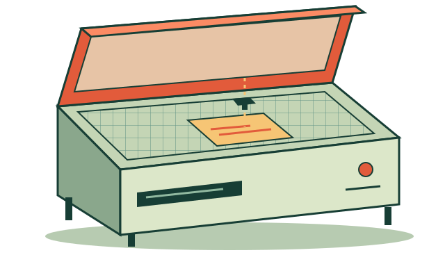
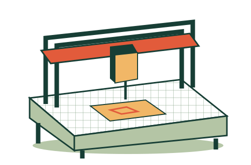
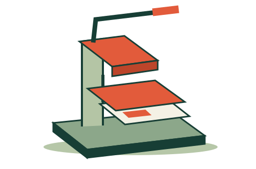

Laser cutter
For the precise little pieces. Cut or engrave your next sign, model or sheet-material project.
€18 / hourSee free time ↗
THE SHARED WORKSHOP · DUBLIN
A sign for Róisín O’Connell’s market stall. One free hour on the laser. Find where your next project fits.
Plan 10:00–11:00 ↗SAT 07 NOV
10:00–11:00 · €18 estimate
For the precise little pieces. Cut or engrave your next sign, model or sheet-material project.

For ideas with a little more depth. Give your timber parts and routed shapes time on the bed.

For the finishing touch. Plan a run of transfers, a one-off shirt or a small textile experiment.
Choose Saturday or Sunday, then check the machine’s occupied and free half-hours.
Add a purpose and up to three sessions. See clashes and estimated costs as you go.
Save a local draft or export a request to discuss with staff. A request doesn’t reserve time.